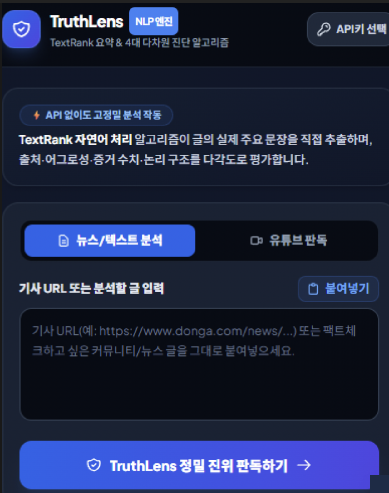
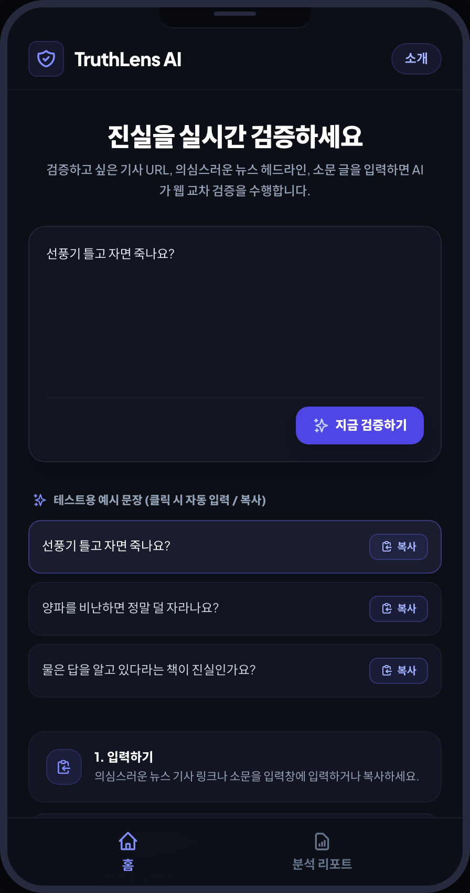
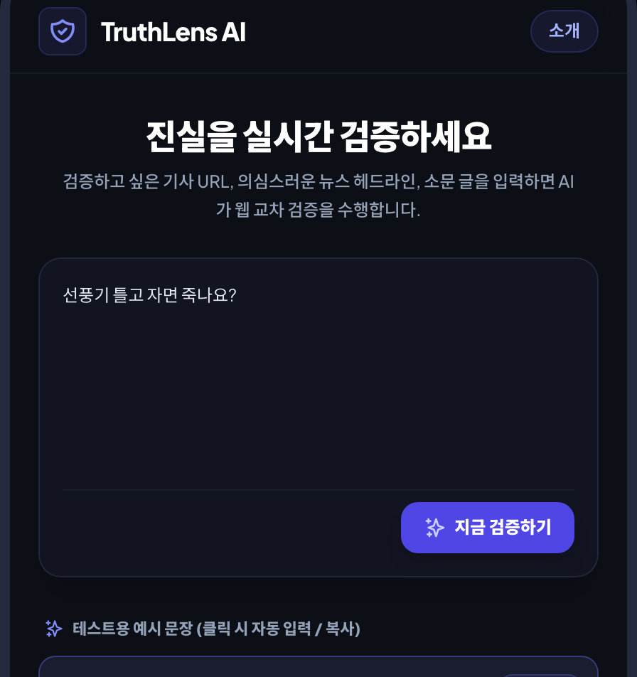
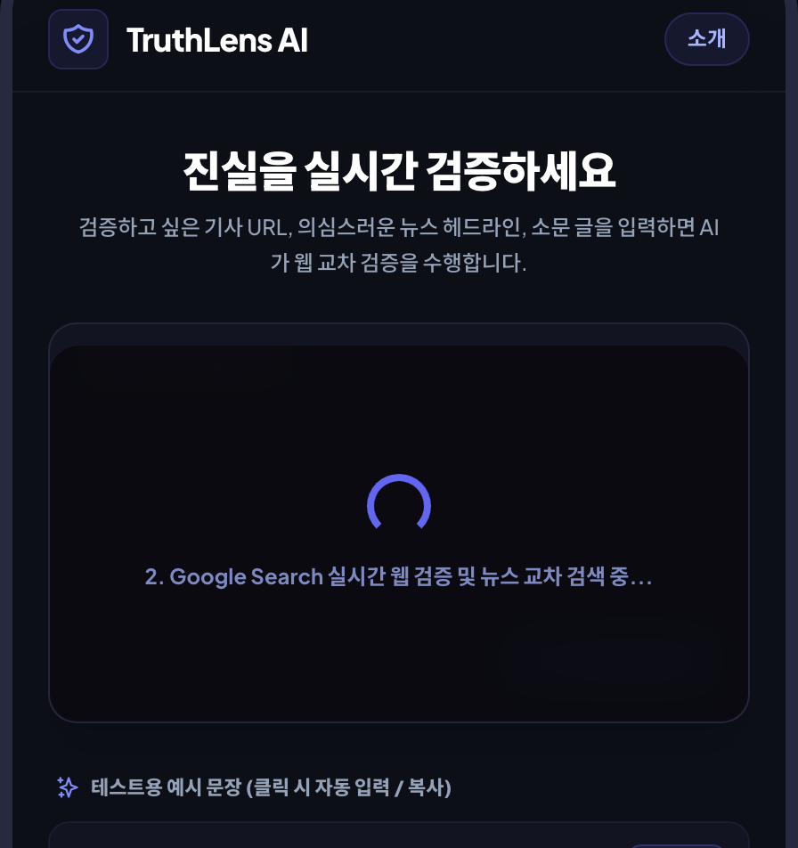
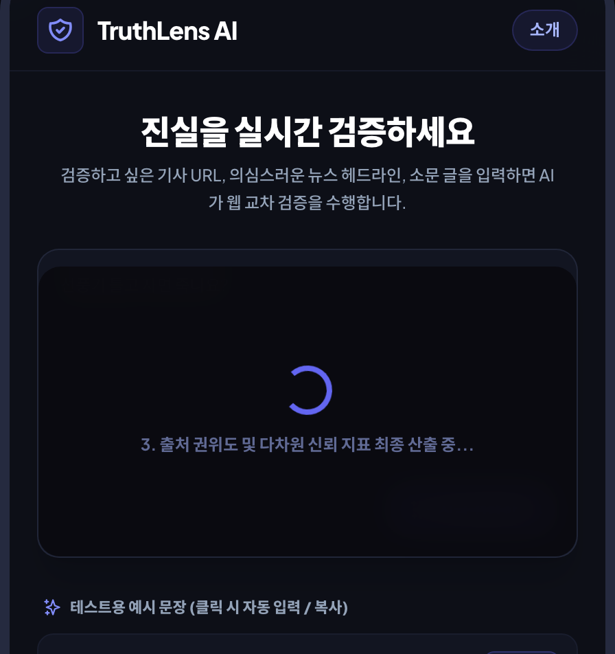
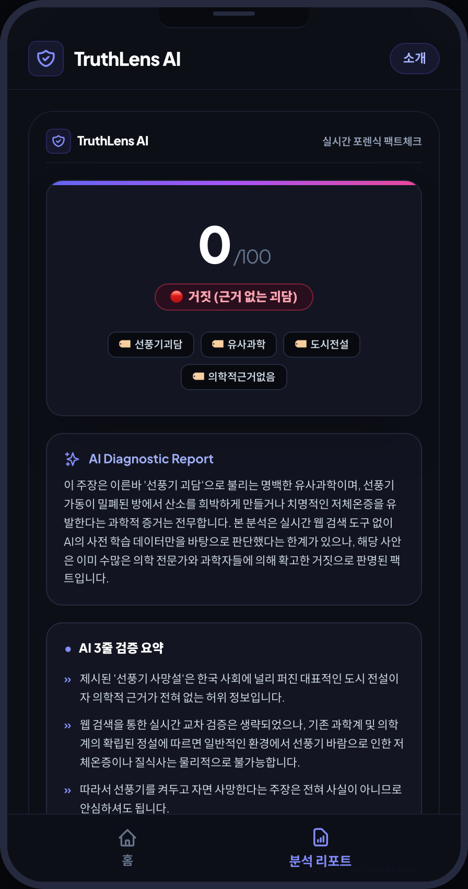
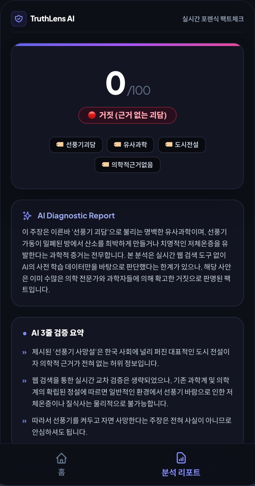

TruthLens AI
판독
멀티미디어 콘텐츠 통합 분석으로 완벽한 신뢰성 검증을 제공하는 AI 팩트체크 솔루션
팀원 소개
세 명이 역할을 나눠 만들었습니다박제용
슬라이드 제작 · 발표오늘 발표 자료(슬라이드)를 기획하고 제작했습니다. 프로젝트 전체 흐름을 정리해 오늘 발표를 맡았습니다.
김무성
웹 자체 개발TruthLens AI 웹 서비스 자체 개발을 맡았습니다. 화면부터 AI 연동까지 서비스가 실제로 돌아가게 만드는 작업입니다.
황채윤
웹 자체 개발TruthLens AI 웹 서비스 자체 개발을 맡았습니다. 개선된 입력 화면과 결과 리포트, 배포까지 함께 만들었습니다.
프로젝트 한눈에 보기
TruthLens AI 판독은 의심스러운 뉴스·유튜브·루머를 입력하면 AI가 진위 여부를 판단하고, 신뢰도를 점수로 보여 주는 웹서비스입니다. 저희 세 명이 8월에 틀을 만들고, 9~10월 고도화를 거쳐 실제로 돌아가는 서비스로 완성했습니다.
오늘 발표 순서
- 문제와 해결 계획 — 왜 가짜뉴스 판독 서비스가 필요한가, 어떻게 풀려고 했는가
- 8월까지의 결과물 — 입력·처리·출력 구조, 환각 방지 설계, 초기 UI와 한계
- 고도화와 Before / After — 멘토링 이후 무엇이 어떻게 바뀌었는가
- 라이브 시연과 배포 — QR로 접속해 직접 입력해 보고, 결과 이미지를 공유
팀 구성
박제용 · 김무성 · 황채윤제작 기간
8월 틀 설계, 9~10월 멘토링 기반 고도화결과까지
질문 하나로 점수·요약·3줄 요약 확인배포 완료
집에서도 접속 가능, QR로 바로 입장문제 정의
그럴듯해서 더 위험한 가짜뉴스지금은 가짜뉴스가 너무 판을 치고 있습니다. 실제 뉴스처럼 매우 그럴듯하게 만들어져 있어 사람이 쉽게 속고, 한 번 퍼지면 되돌리기도 어렵습니다.
!의학·금융·정치 분야 허위정보 확산
건강, 돈, 정치처럼 판단 하나가 삶에 직접 영향을 주는 분야일수록 허위정보의 파급력이 큽니다. 개인에게는 건강·재산 피해로, 사회에는 혼란과 갈등으로 이어집니다.
그래서 TruthLens AI가 하려는 것
흔히 퍼져 있는 가짜뉴스를 AI로 먼저 검증하고, 최신 내용까지 반영해 판단하는 알고리즘을 만드는 것입니다.
기존 검증 방식의 한계
그래서 자동 검증이 필수입니다1개별 확인의 번거로움
기사, 영상, 루머를 하나하나 따로 찾아보고 비교해야 합니다. 출처를 찾고, 다른 보도와 대조하고, 전문가 의견까지 확인하는 과정은 시간이 많이 듭니다.
2일반 사용자에게는 너무 어려움
어디서부터 확인해야 하는지, 무엇을 믿어야 하는지 판단하기 어렵습니다. 결국 대부분의 사용자는 확인을 포기하거나 메모만 하고 넘어가게 됩니다.
저희의 해결 방향
의심스러운 텍스트 하나를 입력하거나 질문 하나를 던지면, 즉시 진위 여부를 판단하고 신뢰도를 점수로 표현하는 자동화된 팩트체크 서비스를 만들기로 했습니다.
해결 계획
크게 세 가지를 계획했습니다다양한 콘텐츠 통합 분석
뉴스뿐 아니라 유튜브 영상, 유튜브 쇼츠까지 한곳에서 분석합니다. 영상의 자막과 음성을 자동으로 추출해 텍스트로 바꾸고, 그 텍스트를 기반으로 검증을 수행합니다.
원문 추적과 출처 평가
주장이 처음 나온 원문을 추적하고, 출처 매체의 신뢰도를 평가합니다. 전문가 의견과 공식 자료를 직접 대조해서 신뢰성 점수를 산출하려고 했습니다.
단일 버튼, 원클릭 분석
의심 정보를 붙여넣기만 하면 버튼 하나로 완전한 분석 결과를 즉시 제공합니다. 누구나 설명서 없이 쓸 수 있는 직관적인 설계를 목표로 했습니다.
8월까지의 솔루션
입력 → 처리 → 출력INPUT
- URL — 기사 링크, 유튜브 링크
- 텍스트 — 헤드라인, 루머, 소문 글
- 이미지 — 캡처 이미지 제출
간단하게 텍스트나 이미지를 제출하면 바로 처리가 시작되도록 틀을 만들었습니다.
PROCESS
- OpenWeb 메타데이터 수집 및 핵심 개체 추출
- 유튜브 oEmbed 메타데이터 및 썸네일 분석
- 신뢰도 평가 산출 (출처 및 키워드 기반)
OUTPUT
- 3줄 핵심 요약
- 진실성 점수
- 자극성 지수
세 가지를 포함한 종합 분석 리포트 제공까지가 8월에 만든 틀입니다.
환각 방지 설계와 8월의 한계
환각 방지 — 신뢰성 확보 및 정밀성 제어
AI가 그럴듯한 거짓을 만들어내는 환각(Hallucination) 문제를 막기 위해 알고리즘을 구상했습니다.
- LLM 단독 응답 의존 배제 — 생성형 AI의 자의적 판단만으로 결론 내리지 않습니다.
- 공개 DB·언론사 아카이브 대조 — 한국언론진흥재단 등록 공식 언론사 데이터베이스와 대조합니다.
- 공공 데이터 실시간 크롤링 — 위키피디아 Open API, 기상청·경찰청 등 정부 기관 공개 데이터를 활용합니다.
8월 시점의 한계
8월까지는 이 내부에서 돌아가는 알고리즘을 완성하지 못했습니다. 보이는 틀(입력 화면, 진행 표시, 결과 화면)은 만들었지만, 실제로 판독하는 엔진은 비어 있는 상태였습니다.
→ 고도화 단계로
이 간극을 메우는 것이 9~10월 고도화의 목표였습니다.
8월 결과물
NLP 엔진 중심의 첫 화면
1분석 엔진 안내
상단에 NLP 엔진 배지와 "TextRank 요약 & 4대 다차원 진단 알고리즘" 문구를 두었습니다. 출처·어그로성·증거 수치·논리 구조를 평가한다고 설명하는 카드입니다.
2입력 UI 구성
'뉴스/텍스트 분석'과 '유튜브 판독' 두 탭으로 입력 종류를 나눴습니다. 기사 URL이나 글을 붙여 넣는 큰 입력창과 '붙여넣기' 버튼이 있습니다.
3판독 시작과 결과 틀
맨 아래 'TruthLens 정밀 진위 판독하기' 버튼으로 시작하고, 결과가 들어갈 화면의 틀도 함께 만들었습니다. 오른쪽 위에는 API키 선택 버튼이 있었습니다.
돌아보면 — 기술 용어와 API키 선택이 먼저 보여서 처음 보는 사용자는 무엇을 해야 할지 알기 어려웠습니다. 이 문제가 다음 개선의 출발점이 되었습니다.
기대 효과
8월에 그렸던 방향사회 효과
- 검증 능력 강화와 내성 향상 — 사용자가 스스로 의심하고 확인하는 습관이 생깁니다.
- 품질 개선 — 온라인에서 오가는 정보의 전반적인 질이 높아집니다.
- 커뮤니티 신뢰 — 검증된 정보를 공유하며 서로를 믿을 수 있게 됩니다.
- 피해 예방 — 가짜뉴스로 인한 피해를 미리 막을 수 있습니다.
서비스 확장
- B2B 확장 — 팩트체크를 더 자동화해 기업 간 거래에서도 쓸 수 있도록 API 연동 플래그를 고려하고 있습니다.
- Chrome 확장 프로그램 — 보던 페이지에서 바로 검증합니다.
- 모바일 전용 앱 — 전 세계 모든 사람이 쉽게 쓸 수 있게 만드는 것이 목표입니다.
틀에서 서비스로
8월 → 9~10월 고도화 → 배포8월 · 틀 만들기
- NLP(TextRank) 엔진 화면, 입력 UI, 결과 화면 틀 완성
- 입력 → 처리 → 출력 구조와 환각 방지 알고리즘 설계
- 내부 판독 알고리즘은 미완성
9월 · 멘토링과 고도화
- 멘토링으로 방향을 잡고 실제로 되는 제품에 집중
- Gemini API 연동, 서버(Vercel 서버리스 API)에서 분석 요청을 처리
- JSON 결과(점수·상태·태그·요약)를 화면 리포트로 연결
10월 · 개선과 배포
- 입력 UI 단순화, 예시 질문 3개 추가
- 리포트를 JPG 이미지로 저장·공유
- 24시간 접속 가능하도록 배포, QR 코드 제공
Before → After
8월 첫 화면에서 지금까지 바뀐 것분석 — 기능을 더한 것보다 첫 사용자가 결정할 것(키·탭·버튼)을 줄인 것이 핵심입니다.

개선 ② 사용 흐름
입력 → 검증 진행 → 결과


처음 쓰는 사람을 위한 예시
실제로 보여 줬더니 무엇을 질문해야 할지 모르는 분들이 많았습니다. 그래서 우리 사회에서 흔히 믿는 괴담 세 가지를 예시로 남겼습니다.
예시 질문 3개
- 선풍기 틀고 자면 죽나요?
- 양파를 비난하면 정말 덜 자라나요?
- '물은 답을 알고 있다'는 책이 진실인가요?
곧 이어서 직접 시연해 보겠습니다.
개선 ③ 결과 리포트
결과 읽는 법
1점수와 상태 — 낮을수록 위험
"선풍기 틀고 자면 죽나요?"는 여러 번 돌려도 0~10점의 최하위권, 상태는 '근거 없는 괴담' 계열로 나옵니다. AI가 매번 새로 판단해 문구와 점수는 조금씩 달라질 수 있습니다.
2태그
선풍기괴담 · 유사과학 · 도시전설 · 의학적근거없음 — 어떤 종류의 정보인지 한눈에 분류해 줍니다.
3AI Diagnostic Report
왜 그렇게 판단했는지 설명하는 총평입니다. 이 사례는 실제로 그런 일이 확인된 적이 없는 대표적 괴담이라, 과학적 타당성이 없는 거짓 정보로 평가했습니다.
4AI 3줄 검증 요약
핵심 결론, 근거와 한계, 유의사항을 세 줄로 정리합니다. 바쁜 사용자는 이 세 줄만 읽어도 판단할 수 있습니다.
라이브 시연
QR로 접속해서 직접 해 봅니다1QR 스캔해서 접속
휴대폰 카메라로 QR을 비추면 바로 열립니다. 24시간 언제든 접속할 수 있습니다.
2질문 선택 또는 입력
예시 질문(선풍기 · 양파 · 물은 답을 알고 있다)을 누르면 자동 입력됩니다. 직접 써도 됩니다.
3'지금 검증하기' 누르고 대기
단계별 진행 문구가 바뀌며 분석합니다. 보통 30초 안에 결과가 나옵니다.
4결과 확인 · 이미지 저장
점수 → 요약 → 3줄 요약을 확인하고, 리포트를 이미지로 저장해 공유할 수 있습니다.
이미지 공유와 배포
알게 된 진실을 다른 사람에게리포트 이미지(JPG) 저장 · 공유
결과 화면 맨 아래 버튼 하나로 리포트를 고화질 이미지로 저장하고 카카오톡으로 쉽게 공유할 수 있습니다.
- 받는 사람은 깔끔한 UI로 가짜뉴스 정보를 바로 읽을 수 있습니다.
- 이미지 하단에 서비스 주소가 들어 있어 TruthLens AI를 자연스럽게 소개합니다.

접속 주소
truthlen-ai.vercel.app
누구나 브라우저에서 바로 접속할 수 있습니다.
24시간 배포
오늘만 작동하는 데모가 아니라, 집에서도 언제든 접속할 수 있도록 배포했습니다. 앞으로도 계속 고도화합니다.
배운 점과 앞으로
우리가 배운 것
기획 → UI → AI 연동 → 배포까지 서비스를 처음부터 끝까지 만드는 과정을 직접 경험했습니다. 앞으로 비슷한 서비스를 만들 때 이 경험을 그대로 활용할 수 있습니다.
앞으로의 방향
지금은 가짜뉴스 팩트체크에서 출발했지만, 앞으로 더 많은 것을 팩트체크할 수 있도록 확장하며 계속 고도화할 계획입니다. 가짜뉴스로 인해 생기는 사회적 비용을 일정 부분 줄이는 것이 목표입니다.
Q & A
서비스를 써 보시고 궁금한 점이나 개선했으면 하는 점이 있다면 말씀해 주세요. 참고하겠습니다. 감사합니다.